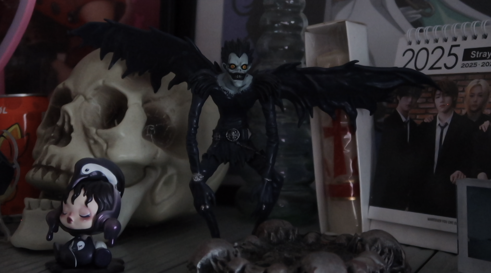
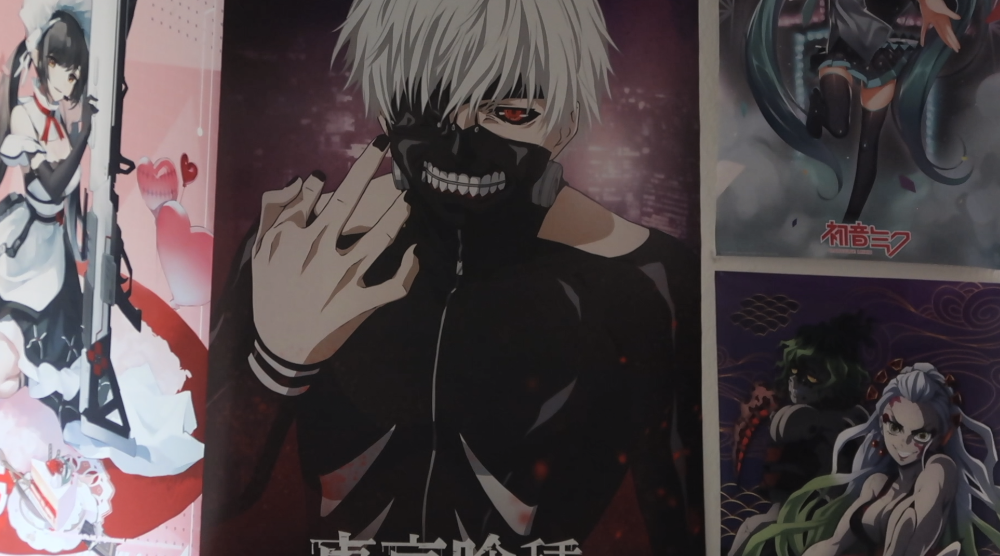
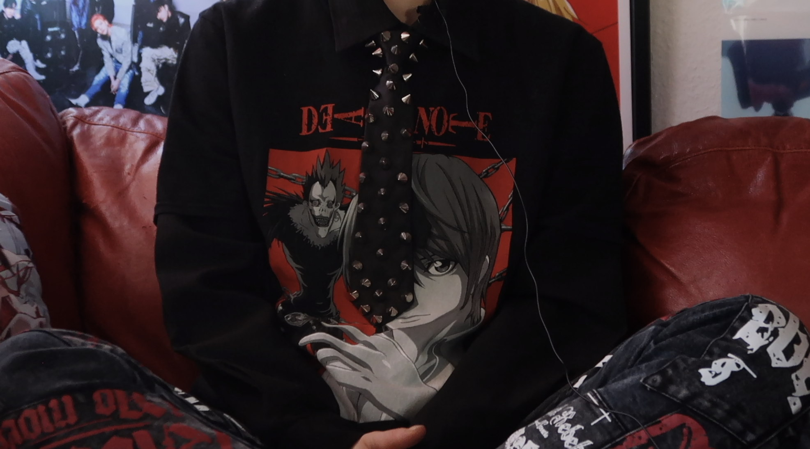

Anime
Hvorfor resonerer anime med unge mennesker?
Anime resonerer med unge mennesker i dag, fordi det tilbyder en unik blanding af visuel æstetik, dybe historier og kulturel diversitet, som taler til deres følelser og interesser. Serien og filmene udforsker komplekse temaer som identitet, venskab, mental sundhed og social uretfærdighed, hvilket gør dem relevante og relaterbare. Samtidig appellerer anime til fantasien gennem episke verdener, spændende karakterer og uforudsigelige plots, som giver unge mulighed for at drømme sig væk fra hverdagen. Med streamingplatformenes udbredelse er anime mere tilgængeligt end nogensinde, og onlinefællesskaber giver unge en platform til at dele deres passion og skabe forbindelser gennem fælles interesser.
Galleri


